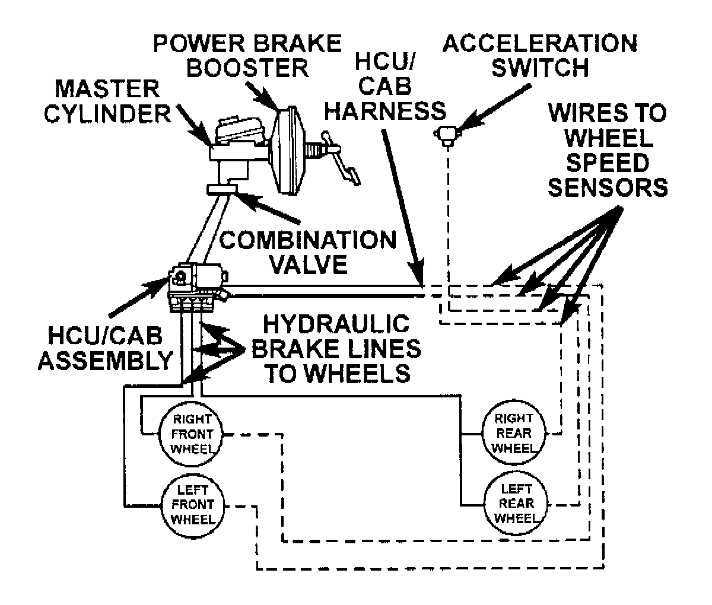

ABS System Description
TEVES ABS SYSTEMThe Teves Mark 20 Antilock Brake System (ABS) is an electronically operated, all wheel brake control system.
The system is designed to prevent wheel lockup and maintain steering control during periods of high wheel slip when braking. Preventing lockup is accomplished by modulating fluid pressure to the wheel brake units.
Antilock Brake System:

The hydraulic system is a three channel design. The front wheel brakes are controlled individually and the rear wheel brakes in tandem. The ABS electrical system is separate from other electrical circuits in the vehicle. A specially programmed controller antilock brake unit operates the system components.
SYSTEM COMPONENTS
ABS system components include:
- Controller Antilock Brake (CAB)
- Hydraulic Control Unit (HCU)
- Vacuum Booster
- Master Cylinder (w/center valves)
- Valve Block Assembly: 6 valve solenoids (3 inlet valves, 3 outlet valves), 4 accumulators
- Pump/Motor Assembly:
1 motor
2 pumps
- G (Acceleration) Switch
- 1 Proportioning Valve
- 4 Wheel Speed Sensor (WSS)/Tone Wheel Assemblies
- ABS Warning Lamp
- Fuses and Wiring Harness
- Fluid Reservoir (integral part of master cylinder assembly)
PEDAL FEEL/VEHICLE CHARACTERISTICS
There are several pedal feel/vehicle characteristics that are considered normal for antilock braking that may require further explanation.
When stopping conditions activate the antilock brakes, the driver may feel some vibrations/pulsations in the brake pedal and may hear the electric solenoid valves clicking and the pump motor running. The vibrations/pulsations are caused by the isolating, building and decaying of brake fluid pressure within the brake lines. The ABS system prevents complete wheel lock-up, but some wheel slip is required for the best braking performance. This slip may result in some tire chirping, depending on the road surface. The chirping should not be interpreted as total wheel lock-up. While total wheel lock-up leaves black tire marks on dry pavement, antilock braking may leave some light marks.
At the end of an ABS stop, the ABS system may not function below 5 Km/h (3 mph). There may be a slight brake pedal drop anytime the ABS is deactivated.
In case of braking on a bumpy surface, the ABS system may detect wheel locking tendencies due to wheel hop and cycle ABS. In the scenario the brake pedal may pulsate with a perceived loss of declaration. ABS braking may also be activated at times while on dry pavement with sand, gravel, or other loose debris on the road.
It should be noted that the pulsating pedal feel characteristic will not illuminate the brake warning lamps or set a trouble code that is stored in the Controller Antilock Brake (CAB). When investigating a hard pedal feel, inspect the sensor and tone wheel teeth for chips/broken teeth, damaged sensor pole tips, excessive runout of the tone wheel, or excessive gap.